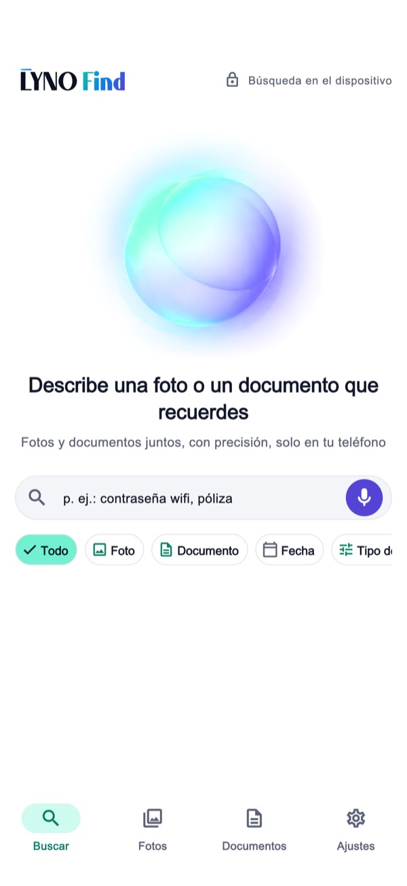

Saca el máximo partido a LYNO Find
LYNO Find encuentra con palabras las fotos y documentos de tu teléfono: lo que muestra una foto, el texto que tiene y lo que dicen los documentos. Todo se analiza y se busca solo en tu teléfono. Esta guía sigue la guía de la app, con pantallas reales.
